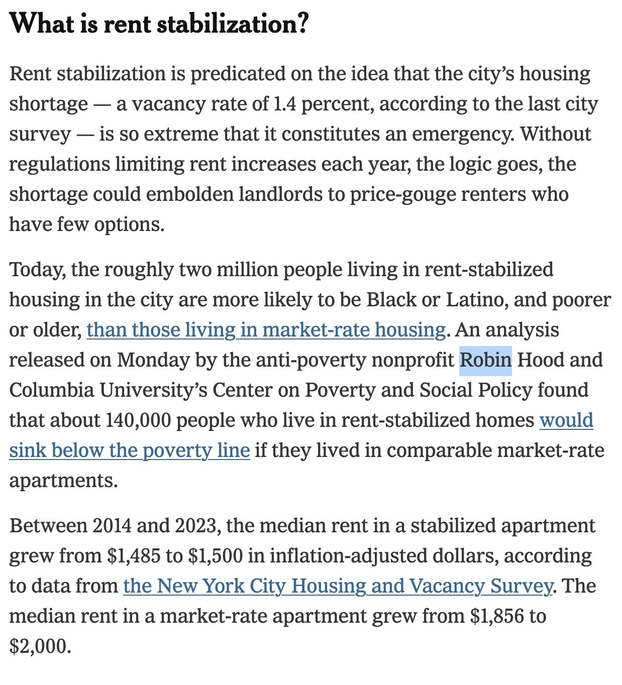
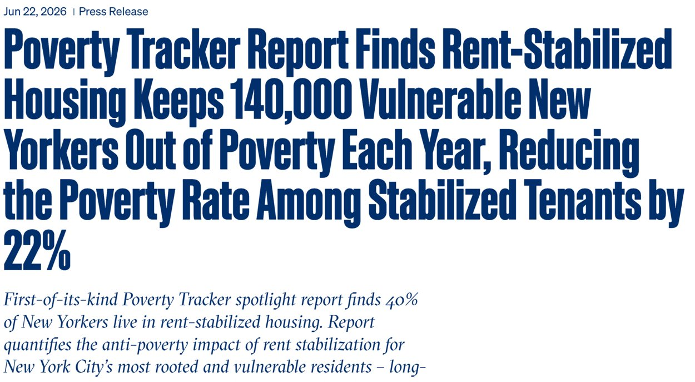

Selected professional work · Summer 2026
Robin Hood Foundation
Communications · Summer 2026
COMMUNICATIONS PORTFOLIO / SUMMER 2026
During my internship at Robin Hood, I supported communications efforts focused on fighting poverty in New York City. My work included press materials, editorial voice, event photography, social media content and media outreach.



01 / WRITING & EDITORIAL
Press release
Helped draft the press release and shape its editorial voice.

June 22, 2026 · Press release Read the original ↗02 / SOCIAL & PHOTOGRAPHY
LinkedIn posts
03 / MEDIA RELATIONS
Earned media coverage
Supported media outreach that secured coverage. Articles written by the respective news outlets.